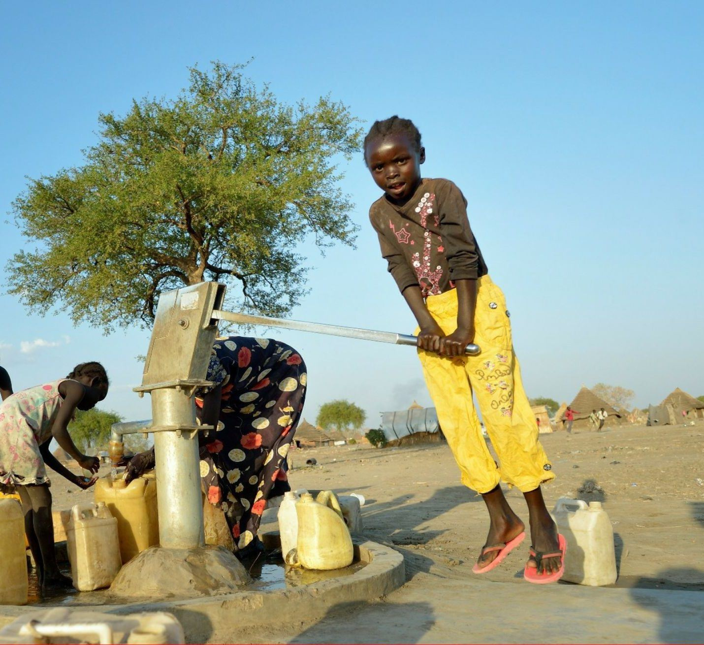
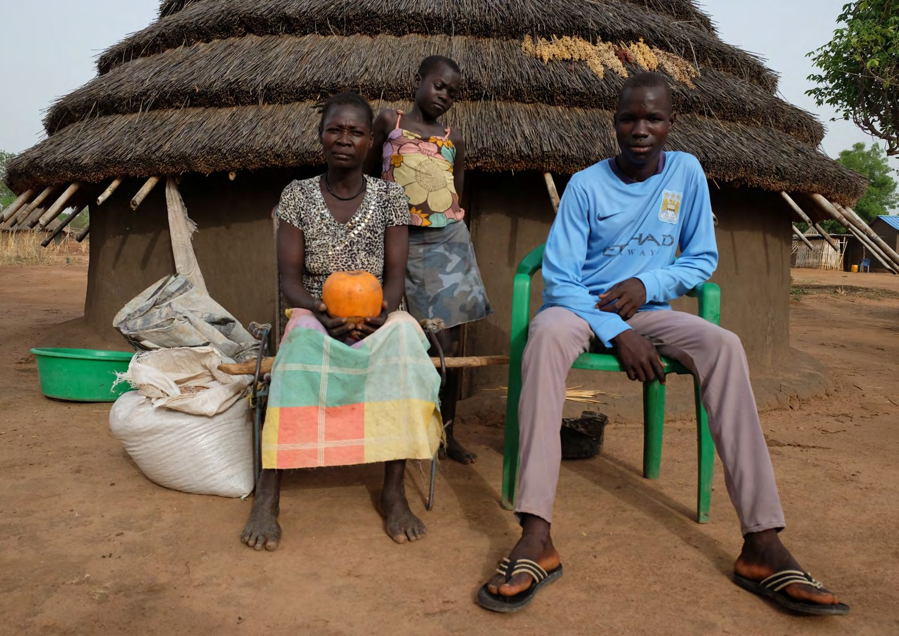
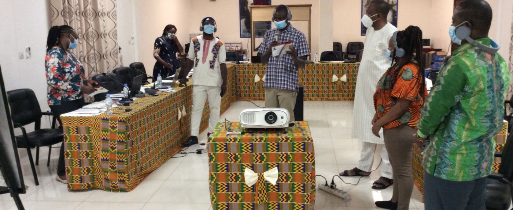
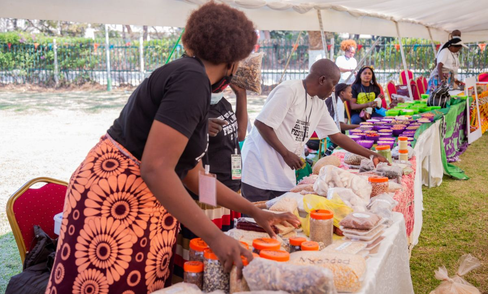
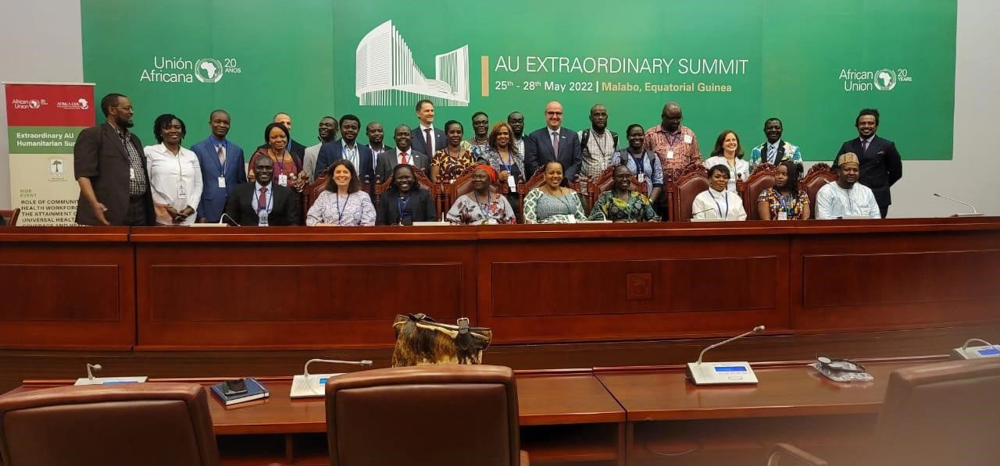
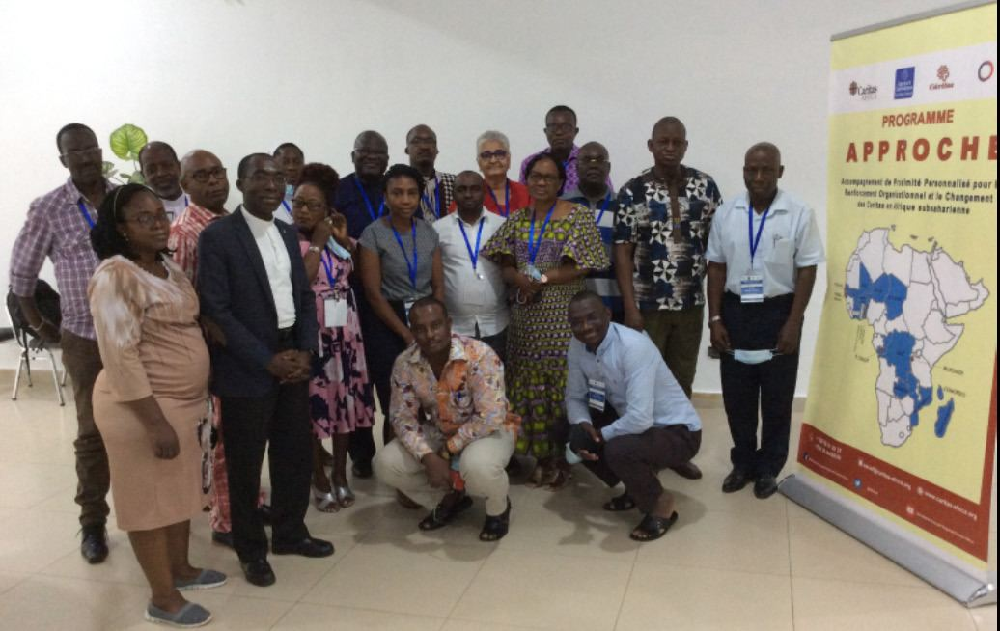
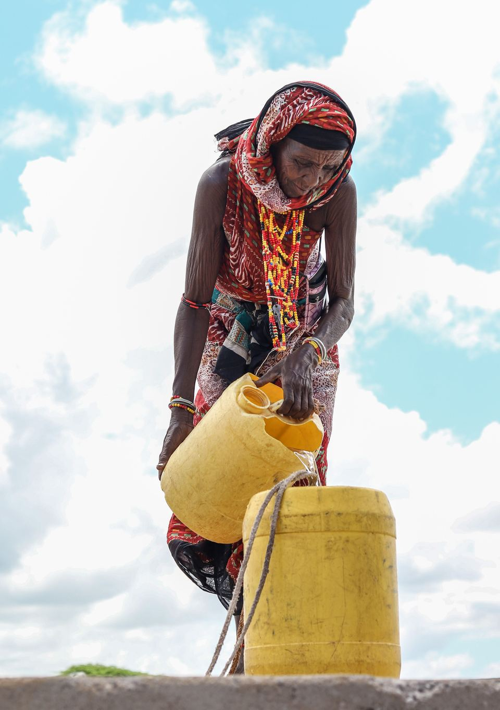
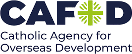
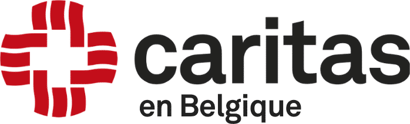

Le ministère social de l'Église catholique en Afrique
Caritas Africa anime, coordonne, représente et renforce 46 Caritas nationales, pour que chacune serve au mieux les plus pauvres de son pays.
Formellement liée à l'Église catholique en tant que ministère de la pastorale sociale en Afrique, elle a été officiellement constituée le 20 janvier 1995 à Matola, au Mozambique, après l'approbation de ses premiers statuts par les Caritas nationales. Son secrétariat exécutif régional est à Lomé.
Qui sommes-nous
- Membres
- Les Caritas nationales de 46 pays d'Afrique, îles comprises
- Organisation
- Six zones, qui portent le nom des conférences épiscopales régionales
- Confédération
- L'une des 7 régions de Caritas Internationalis, qui compte 162 membres
- Siège
- Secrétariat exécutif régional, 735, boulevard des Armées, Lomé (Togo)
Notre action
Inspirés par l'Évangile, nous travaillons dans un esprit de communion, de coopération fraternelle et de partenariat pour une Afrique meilleure.

Répondre aux urgences humanitaires
Répondre efficacement aux urgences humanitaires, aux côtés des Caritas nationales de chaque pays.
Photo : Caritas Africa, cadre stratégique 2024–2030

Renforcer les Caritas nationales
Donner aux personnes marginalisées et défavorisées les moyens d'agir et de plaider pour des communautés résilientes, avec leur propre participation.
Photo : rapport annuel 2021

Servir et accompagner les plus pauvres
Promouvoir le développement humain intégral, avec une attention prioritaire aux plus démunis.
Photo : rapport annuel 2021

Porter la voix des pauvres
Le plaidoyer auprès des institutions africaines et internationales, comme la déclaration conjointe au sommet UA–UE.
Sommet extraordinaire de l'Union africaine, Malabo, mai 2022. Photo : rapport annuel 2022

Programme APPROCHE
Phase 3 du programme A2P-DIRO, 2019–2023 : un accompagnement de proximité personnalisé pour le renforcement organisationnel et le changement des Caritas en Afrique subsaharienne.
- Budget total
- 2,5 M€
- Pays
- 17
- Parties prenantes directes
- 17 Caritas nationales et 202 Caritas diocésaines
- Population ciblée
- Plus de 40 millions de personnes vulnérables
Un réseau de 46 Caritas nationales
Six zones, qui portent le nom des conférences épiscopales régionales, organisent la coordination entre les membres. Chacune est coordonnée par une Caritas nationale.
Notre mission
Notre mission · Actes 1:8« Témoigner de l'amour de Dieu »
À travers des œuvres de charité et de justice, en vue d'assurer le développement humain intégral, avec une attention prioritaire aux pauvres et aux plus démunis.
Notre vision
Notre vision · Jean 10:10« La vie en plénitude pour tous »
Des communautés épanouies en Afrique, où l'amour, la réconciliation, la justice, la paix et la prospérité prévalent pour tous, et où la dignité de chaque femme, homme et enfant est promue.
Actualités et déclarations
Les prises de position du réseau et la vie des Caritas nationales.
Rapports et publications
Nos rapports annuels depuis 2011, notre cadre stratégique et les réflexions du réseau, en français, anglais et portugais.
Rapports annuels
Soutenir Caritas Africa
Rejoignez Caritas Africa dans son engagement pour la justice et la charité envers les plus défavorisés, aux côtés de 46 Caritas nationales.

Signaler un abus ou une exploitation
Toute suspicion d'abus ou d'exploitation d'un enfant ou d'un adulte vulnérable impliquant le personnel ou les collaborateurs de Caritas doit être signalée. L'identité de la personne qui signale n'est divulguée qu'en cas de « besoin d'en connaître ».
Avec nos partenaires



